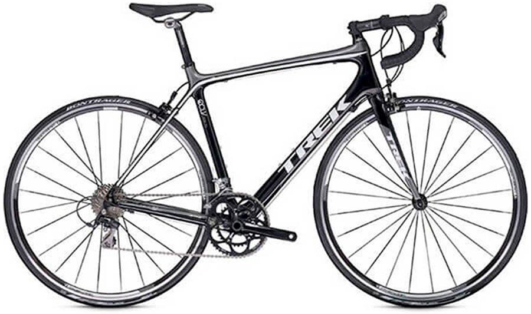
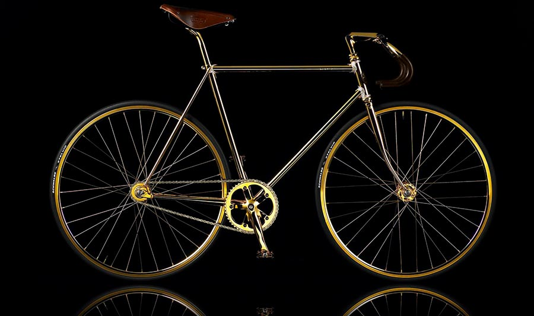
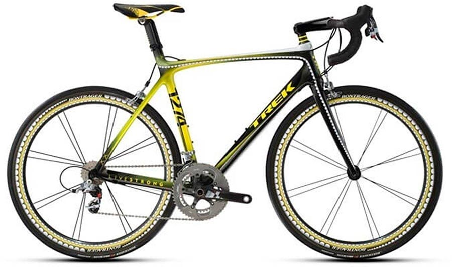
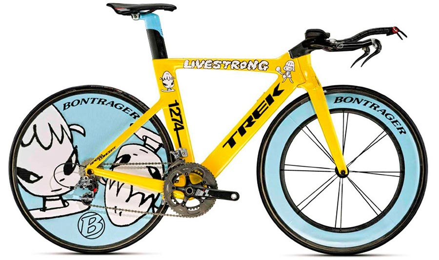
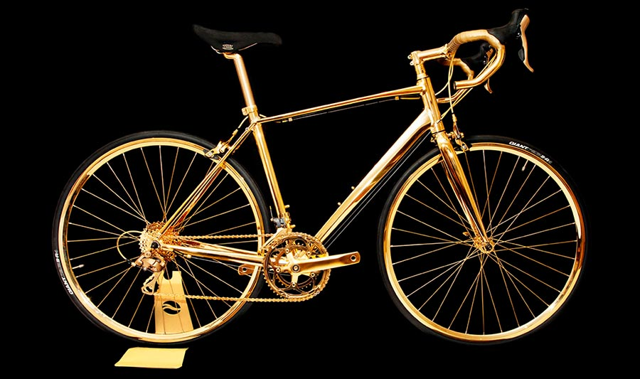

1.Trek Madone 7-Diamond

75 000 долларов стоит Trek Madone 7-Diamond. Откуда такая цифра? А все дело в «обложке».
Карбоновый каркас велосипеда украшен сотней белых бриллиантов, в передней части рамы установлена пластина из белого и желтого золота и это не все.
Цифра семь выложена бриллиантами в семь карат. Очень символично, потому что велосипед создан в честь семикратного победителя Tour de France Лэнса Армстронга.
В 2005 году чудо ювелирного искусства было продано анонимному покупателю, и он вряд ли на нем катается (может только по собственному имению).
2.Aurumania Crystal Edition Gold

В 101 000 долларов оценили Aurumania Crystal Edition Gold. Как мы видим из названия, дизайнеры решили добавить немного роскоши к раме велосипеда.
Ну как немного… рама почти полностью покрыта золотом и украшенная кристаллами, а ручки и сиденья изготовлены из высококачественной кожи.
И это еще не все, за всего-то $6 000 можно изменить обычную подножку на позолоченную и инкрустированную кристаллами (где-то один прокурор завистливо вздохнул).
3.Kaws Trek Madone

Пятую строчку занимает опять же Trek. Проданный с аукциона за 160 000 долларов Kaws Trek Madone. Этот велосипед попал в рейтинг как коллекционный.
На нем нет золота или бриллиантов. Однако, на нем ездил сам Лэнс Армстронг, а рама и колеса покрыты рисунками зубов (не Лэнса, но это не точно),
выполненными знаменитым художником Брайаном Донелли. Кстати, Армстронг во время гонки «Вуэльта Кастилья и Леон» упал с этого велосипеда и сломал ключицу в 2009 году.
4.Trek Yoshitomo Nara Speed Concept

Это чудо инженерной мысли, изготовленное из углеродного волокна, ушло с молотка, точнее с аукциона «Сотбис» за 200 000 долларов.
Особенность его в том, что это не только чертовски хороший велосипед, а еще и красивый.
Его дизайн разработал Нара Йошимото (известный, в узких кругах, художник) и он включает изображение мультяшных героев аниме и НЛО.
Хотим отметить, что часть вырученных средств конкурса была передана на благотворительность.
5.24K Gold Men’s Racing Bike

Можно подумать, что велосипед, в основном покрытый золотом, будет самым дорогим, однако его цена составила
«всего» 393 000 долларов. (Более дорогие велосипеды, мы разберем позже)
Этот байк изготовлен вручную и является позолоченным гоночным велосипедом от Rolls Royce.
Вы будете полностью поражены этим байком, потому что все, от руля до колес и сидений, покрыто 24-каратным золотом.
Велосипед имеет потрясающий внешний вид. Каркас сияет ярче солнца, очень удобен благодаря сиденью из тонкой кожи,
а также украшен бриллиантами и другими драгоценными камнями